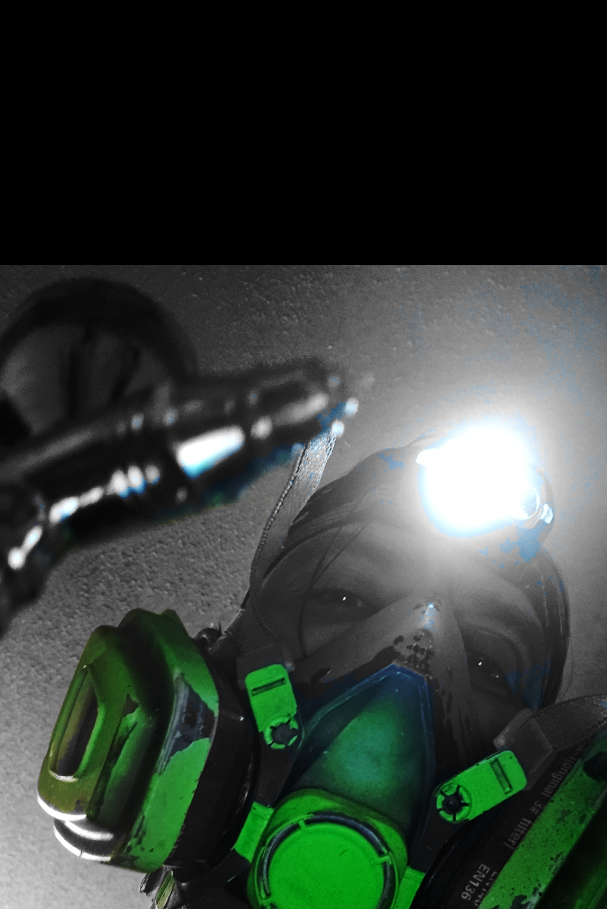

The Archive

h3x-punk, born in El Paso, TX and raised in both El Paso and Cd. Juarez across the border, always loved drawing and received inspiration from his father. He gained even more inspiration as a student of El Paso muralist Lupe Casillas-Lowenberg while attending Ysleta High School.
Growing up in the '80s, he soaked up the neon glow of synthwave and retro culture. His techie side showed up early, in taking electronics apart just to see how they worked and with cyberpunk classics influence from AKIRA and Ghost in the Shell. But it wasn't until he picked up hard pastels and an airbrush that he found the undiscovered potential in his dark ambient mind, where the neon met the noir..
Our mission is to provide a space for artists who refuse to conform—where neon bleeds into shadow.